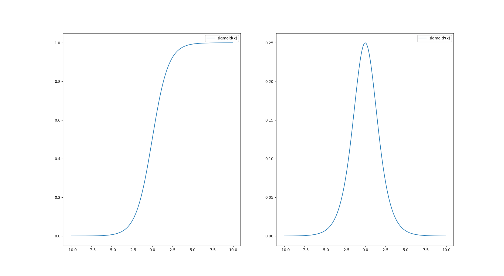
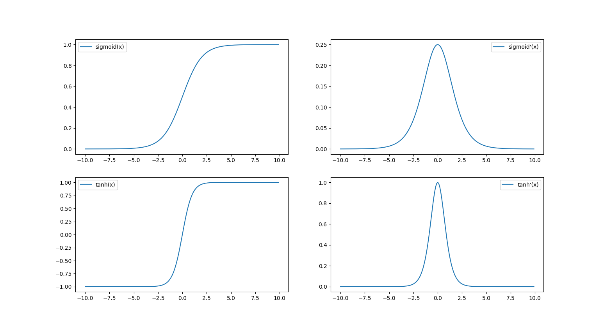
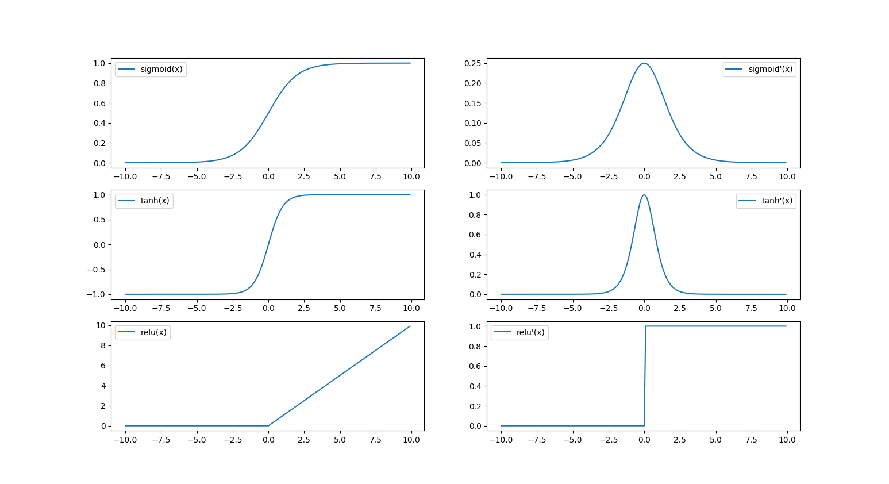

梯度消失与梯度爆炸
References
- 机器学习总结（九）：梯度消失（vanishing gradient）与梯度爆炸（exploding gradient）问题
- 详解梯度爆炸和梯度消失
- 详解机器学习中的梯度消失、爆炸原因及其解决方法 文中存在一些错误，本文对其进行了修正
- 使用 Markdown + MathJax 在博客里插入数学公式
- 把公式转换为图片 F(x)=x^2
- hexo博客配置MathJax How to config it to make it work?
1. 梯度不稳定问题
什么是梯度不稳定问题?
深度神经网络中的梯度不稳定性，前面层中的梯度或会消失，或会爆炸。
原因: 前面层上的梯度是来自于后面层上梯度的乘积(后面的公式)。当存在过多的层次时，就出现了内在本质上的不稳定场景，如梯度消失和梯度爆炸。
目前优化神经网络的方法都是基于反向传播的思想，即根据损失函数计算的误差通过梯度反向传播的方式，指导深度网络权值的更新优化。
整个深度网络可以视为是一个复合的非线性多元函数：
2. 梯度消失 & 梯度爆炸
梯度消失(vanishing gradient problem)与梯度爆炸(exploding gradient problem)其实是一种情况。其中，梯度消失经常出现，一是在深层网络中，二是采用了不合适的激活函数(比如sigmoid)。梯度爆炸一般出现在深层网络和权值初始化值太大的情况下，下面分别从这两个角度分析梯度消失和爆炸的原因。
2.1 深层网络角度
假设每一层网络激活后的输出为 $fi(x)$ ,其中i为第i层, x代表第i层的输入，也就是第i−1层的输出，f是激活函数，那么，得出 $f{i+1}=f(f{i}∗w{i+1}+b{i+1})$ ,简单记为 $f{i+1}=f(f{i}∗w{i+1})$ 。
BP算法基于梯度下降策略，以目标的负梯度方向对参数进行调整，参数的更新为w←w+Δw，给定学习率 $\alpha$ ，得出
$\Delta{w}=−\alpha\frac{\partial{Loss}}{\partial{w}}$ 。如果要更新第二隐藏层的权值信息，根据链式求导法则，更新梯度信息：
很容易看出来 $\frac{\partial{f_2}}{\partial{w_2}}=f_1$ 即第二隐藏层的输入。
所以说， $\frac{\partial{f_4}}{\partial{f_3}}$ 就是对激活函数进行求导，如果此部分大于1，那么层数增多的时候，最终的求出的梯度更新将以指数形式增加，即发生梯度爆炸，如果此部分小于1，那么随着层数增多，求出的梯度更新信息将会以指数形式衰减，即发生了梯度消失。如果说从数学上看不够直观的话，下面几个图可以很直观的说明深层网络的梯度问题。
总结：从深层网络角度来讲，不同的层学习的速度差异很大，表现为网络中靠近输出的层学习的情况很好，靠近输入的层学习的很慢，有时甚至训练了很久，前几层的权值和刚开始随机初始化的值差不多。因此，梯度消失、爆炸，其根本原因在于反向传播训练法则，属于先天不足，另外多说一句，Hinton提出capsule的原因就是为了彻底抛弃反向传播，如果真能大范围普及，那真是一个革命。
对于Sigmoid激活函数，前面的层(离输出层远的层)比后面的层(离输出层近的层)梯度变化更小，故变化更慢，从而引起了梯度消失问题。当权值过大，前面层比后面层梯度变化更快，会引起梯度爆炸问题。
2.2 激活函数角度
上文中提到计算权值更新信息的时候需要计算前层偏导信息，因此如果激活函数选择不合适，比如使用sigmoid，梯度消失就会很明显了，原因看下图，左图是sigmoid激活函数图，右边是其导数的图像，如果使用sigmoid作为激活函数，其梯度是不可能超过0.25的，这样经过链式求导之后，很容易发生梯度消失。
$sigmoid(x) = \frac{1}{1+e^{-x}} $ $sigmoid’(x) = \frac{e^{-x}}{1+e^{-x}}$
sigmoid函数及其导函数的曲线如下图所示:

同理，tanh作为激活函数，其导数图如下，可以看出，tanh比sigmoid要好一些，但是它的导数仍然是小于1的。
$ tanh(x) = \frac{e^{x}-e^{-x}}{e^{x}+e^{-x}} $ $ tanh’(x) = 1 - \frac{(e^x-e^{-x})^2}{(e^x+e^{-x})^2} = \frac{4}{(e^x+e^{-x})^2} $
tanh函数及其导函数的曲线如下图所示(与sigmoid函数的对比):

2.3 几个问题
1.当采用Sigmoid激活函数时，梯度消失和梯度爆炸哪个更易发生？
分析梯度爆炸出现时a的取值范围：因为Sigmoid导数最大为1/4，故只有当abs(w)>4时才可能出现 $abs(w_j * \sigma’(z_j))>1$ 。由此计算出a的数值变化范围很小，仅仅在此窄范围内会出现梯度爆炸问题。而最普遍发生的是梯度消失问题。
2.如何确定是否出现梯度爆炸？
训练过程中出现梯度爆炸会伴随一些细微的信号，如：
- 模型无法从训练数据中获得更新（如低损失）
- 模型不稳定，导致更新过程中的损失出现显著变化
- 训练过程中，模型损失变成 NaN
3. 如何解决梯度消失和梯度爆炸？
- 重新设计网络结构
- 在深度神经网络中，梯度爆炸可以通过重新设计层数更少的网络来解决。
- 使用更小的批尺寸对网络训练也有好处。另外也许是学习率的原因，学习率过大导致的问题，减小学习率。
- 在循环神经网络中，训练过程中在更少的先前时间步上进行更新（沿时间的截断反向传播，truncated Backpropagation through time）可以缓解梯度爆炸问题。
- 预训练加微调
此方法来自Hinton在2006年发表的一篇论文，Hinton为了解决梯度的问题，提出采取无监督逐层训练方法，其基本思想是每次训练一层隐节点，训练时将上一层隐节点的输出作为输入，而本层隐节点的输出作为下一层隐节点的输入，此过程就是逐层“预训练”（pre-training）；在预训练完成后，再对整个网络进行“微调”（fine-tunning）。Hinton在训练深度信念网络(Deep Belief Networks)中，使用了这个方法，在各层预训练完成后，再利用BP算法对整个网络进行训练。此思想相当于是先寻找局部最优，然后整合起来寻找全局最优，此方法有一定的好处，但是目前应用的不是很多了。 - 梯度剪切(Gradient Clipping)、正则
梯度剪切这个方案主要是针对梯度爆炸提出的，其思想是设置一个梯度剪切阈值，然后更新梯度的时候，如果梯度超过这个阈值，那么就将其强制限制在这个范围之内。这可以防止梯度爆炸。
另外一种解决梯度爆炸的手段是采用权重正则化（weithts regularization）比较常见的是l1正则(权重绝对值)和l2正则(权重平方)，在各个深度框架中都有相应的API可以使用正则化。
正则化是通过对网络权重做正则限制过拟合，仔细看正则项在损失函数的形式： 其中， $\alpha$ 是指正则项系数，如果发生梯度爆炸，权值的 范数 就会变的非常大，通过正则化项，可以部分限制梯度爆炸的发生。 使用ReLU,maxout等替代sigmoid
ReLU的思想很简单，如果激活函数的导数为1，那么就不存在梯度消失梯度爆炸的问题了，每层的网络都可以得到相同的更新速度。sigmoid函数的梯度随着x的增大或减小而消失，但ReLU不会。
ReLU函数及其导函数的曲线如下图所示(与sigmoid/tanh函数的对比):

从上图可以看出，ReLU函数的导数在正数部分是恒等于1的，因此在深层网络中使用ReLU激活函数就不会导致梯度消失和爆炸的问题。
ReLU的主要贡献在于：- 解决了梯度消失、爆炸的问题
- 计算方便，计算速度快
- 加速了网络的训练
同时ReLU也存在一些缺点：
- 由于负数部分恒为0，会导致一些神经元无法激活（可通过设置小学习率部分解决）
- 输出不是以0为中心的
尽管ReLU也有缺点，但是仍然是目前使用最多的激活函数。采用ReLU激活函数是最适合隐藏层的新实践。
- LSTM
LSTM全称是长短期记忆网络（long-short term memory networks），是不那么容易发生梯度消失的，主要原因在于LSTM内部复杂的“门”(gates)，LSTM通过它内部的“门”可以在更新的时候“记住”前几次训练的”残留记忆“，因此，经常用于生成文本中。目前也有基于CNN的LSTM。采用LSTM单元是适合循环神经网络的序列预测的最新最好实践。 - Batchnorm
Batchnorm是深度学习发展以来提出的最重要的成果之一了，目前已经被广泛的应用到了各大网络中，具有加速网络收敛速度，提升训练稳定性的效果，Batchnorm本质上是解决反向传播过程中的梯度问题。batchnorm全名是batch normalization，简称BN，即批规范化，通过规范化操作将输出信号规范化到均值为0，方差为1保证网络的稳定性。 - 残差结构